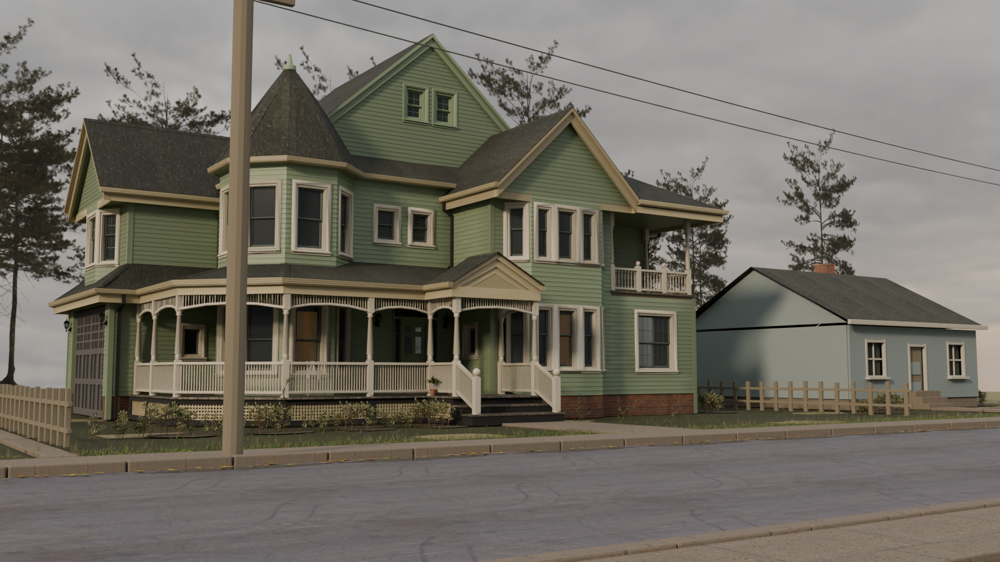

Offline render of the exported house and street assets. This is a lighting and material study, not a capture of the interactive scene. The distant pines use transparent rendered views. Mature deciduous street trees and richer neighboring buildings remain unfinished.